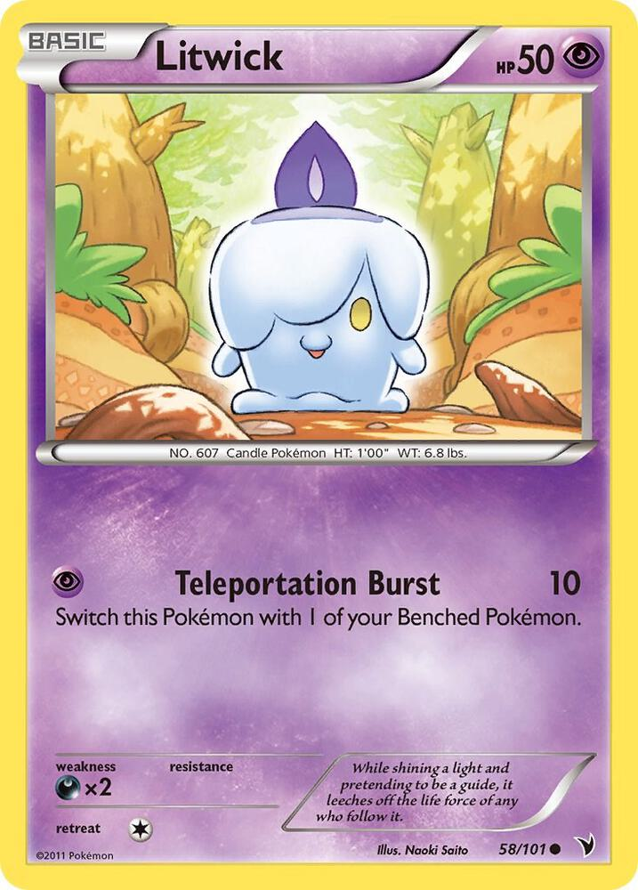
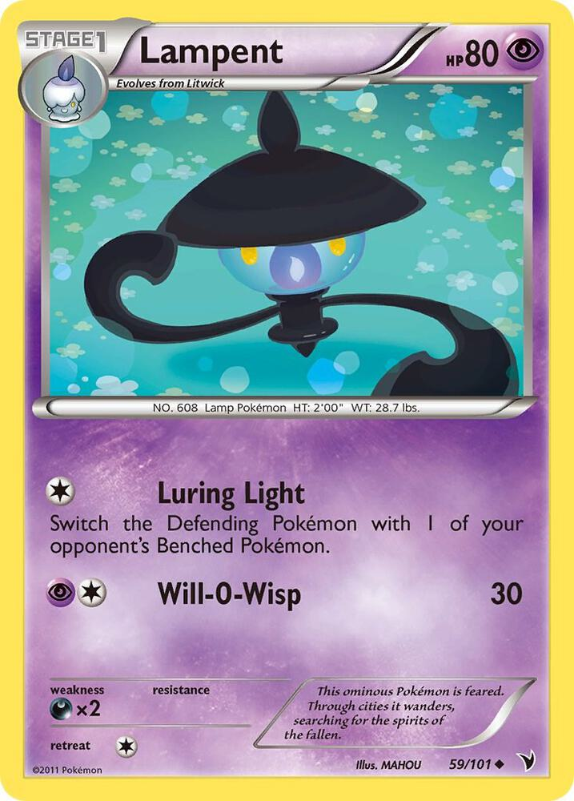
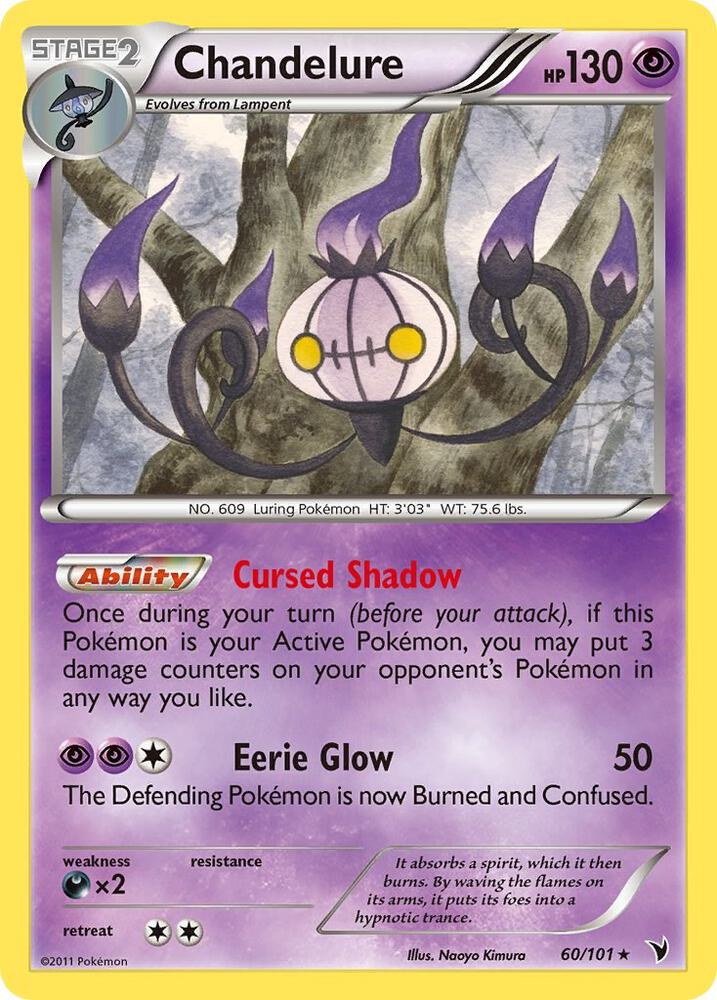
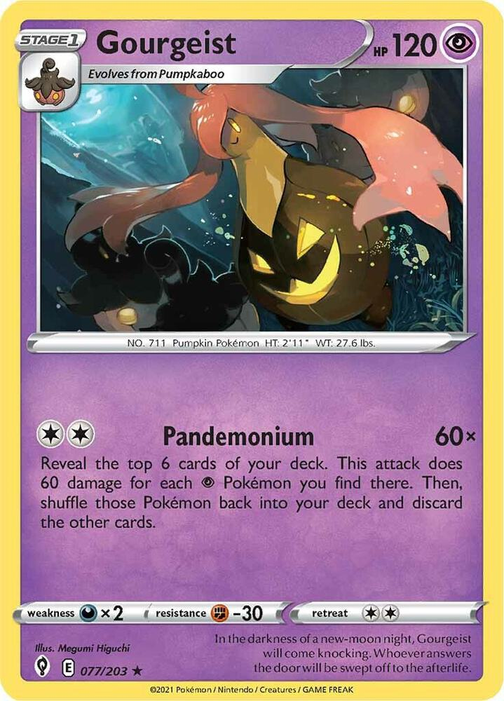
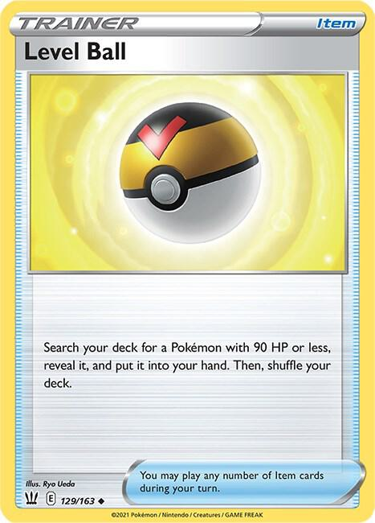
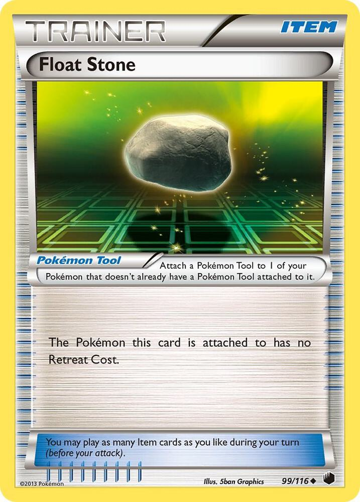
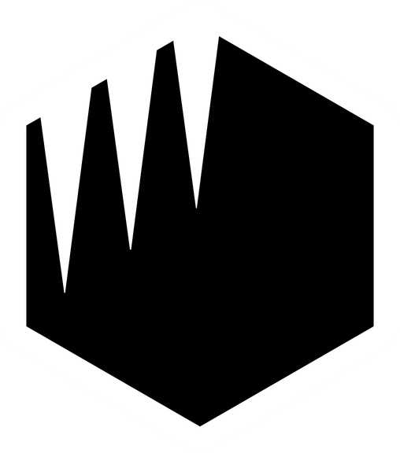

x4
x4
 x3
x3

x4

x3 x2
x2 x2
x2
x2 x4
x4 x4
x4![Professor's Research [Professor Magnolia]](./assets/208508_professors-research-professor-magnolia.jpg) x4
x4 x3
x3 x3
x3
x2 x2
x2
x2 x2
x2 x11
x11 Xero's Witching Hour
Xero's Witching Hour 

Build A — Damage counters, everywhere, forever

Same foundation as before, because it is still the best thing this colour does:
What's new is the volume. The first draft had exactly one counter-placement effect. This build has four, and one of them is free every single turn:
| Source | Counters | Cost | Can it hit the Bench? |
|---|---|---|---|
| Cursed Shadow (Chandelure) | 3, anywhere | free, every turn | ✅ yes |
| Screaming Circle (Gengar) | 2 × their Bench | 1 Energy, your attack | ❌ Active only |
| Burned (from Eerie Glow) | 2 per Checkup | already applied | ❌ Active only |
| Netherworld Gate | 3, on your own Gengar | free | your Bench |
Cursed Shadow is the card that changes the deck's identity. Three damage counters, placed anywhere you like, once per turn, for zero cost, forever. It reaches the Bench — which nothing in your Dark deck can do, and which is precisely where Fox keeps his Charmanders while they grow into Charizards.
And then there's the payoff card the first draft was missing entirely:
Wobbuffet's Psychic Assault costs one Psychic Energy and does 10 damage, plus 10 more for each damage counter on your opponent's Active Pokémon. A deck that spends the whole game piling counters onto one target finally has a button that cashes them all in.
x4x3
x4

x3x2x2
x2x4x4x4x3x3
x2x2
x2x2x11Pokémon (23)
| Qty | Card | Set | Number | Own | Need |
|---|---|---|---|---|---|
| 4 | Gastly | any Psychic print | — | 4 | 0 |
| 1 | Haunter | any Psychic print | — | 5 | 0 |
| 3 | Gengar | Lost Origin | 066 | 1 | 2 |
| 1 | Gengar | Sword & Shield | 085 | 1 | 0 |
| 4 | Litwick | Noble Victories | 058 | 0 | 4 |
| 1 | Lampent | Noble Victories | 059 | 0 | 1 |
| 3 | Chandelure | Noble Victories | 060 | 0 | 3 |
| 2 | Wobbuffet | Phantom Forces | 036 | 0 | 2 |
| 2 | Pumpkaboo | any Psychic print | — | 3 | 0 |
| 2 | Gourgeist | Evolving Skies | 077 | 1 | 1 |
Trainers (26)
| Qty | Card | Type | Set |
|---|---|---|---|
| 4 | Rare Candy | Item | any |
| 4 | Ultra Ball | Item | any |
| 4 | Professor's Research | Supporter | any |
| 3 | Mysterious Treasure | Item | Forbidden Light 113 |
| 3 | N | Supporter | Noble Victories 92 |
| 2 | Level Ball | Item | Battle Styles 129 |
| 2 | Switch | Item | any |
| 2 | Float Stone | Pokémon Tool | Plasma Freeze 99 |
| 2 | Old Cemetery | Stadium | Chilling Reign 147 |
Energy (11)
| Qty | Card | Set | Number |
|---|---|---|---|
| 11 | Basic Psychic Energy | Mega Evolution Energies | 005 |
23 + 26 + 11 = 60. ✅
Basics: 12 (4 Gastly, 4 Litwick, 2 Wobbuffet, 2 Pumpkaboo) — about a 19% mulligan rate. That is the healthiest of any deck on this table; Gengar Gang sits at 40%.


 Psychic
Psychic Darkness ×2
Darkness ×2 2
2 rotated outEerie Glow (50) The Defending Pokémon is now Burned and Confused.
rotated outEerie Glow (50) The Defending Pokémon is now Burned and Confused.Stage 2 from Lampent.
Read the Ability's condition twice: Cursed Shadow only works while Chandelure is your Active Pokémon. Not from the Bench. That one word is what makes this deck harder to pilot than it looks.

 PsychicDarkness ×21rotated outTeleportation Burst (10) Switch this Pokémon with 1 of your Benched Pokémon.
PsychicDarkness ×21rotated outTeleportation Burst (10) Switch this Pokémon with 1 of your Benched Pokémon.The bottom of the line into Chandelure. Four of them, because a Stage 2 needs a Basic underneath it before anything else can happen.

 PsychicDarkness ×21rotated outLuring Light - Switch the Defending Pokémon with 1 of your opponent's Benched Pokémon.Will-O-Wisp (30)
PsychicDarkness ×21rotated outLuring Light - Switch the Defending Pokémon with 1 of your opponent's Benched Pokémon.Will-O-Wisp (30)Lampent's Luring Light is a free Boss's Orders on a Stage 1, worth remembering when you are one Prize from winning.

 PsychicPsychic ×22rotated outPsychic Assault (10+) - Does 10 more damage for each damage counter on your opponent's Active Pokémon.
PsychicPsychic ×22rotated outPsychic Assault (10+) - Does 10 more damage for each damage counter on your opponent's Active Pokémon.Basic, and Weak to Psychic ×2, which only ever matters against your own other Psychic build.
Psychic Assault is how you cash in every counter you have piled up:
 PsychicDarkness ×2
PsychicDarkness ×2 Fighting -302rotated outScreaming Circle - Put 2 damage counters on your opponent's Active Pokémon for each of your opponent's Benched Pokémon.
Fighting -302rotated outScreaming Circle - Put 2 damage counters on your opponent's Active Pokémon for each of your opponent's Benched Pokémon.Stage 2 from Haunter. Netherworld Gate works from the discard pile, which is why one copy earns its slot even on the turns you never draw it.

 PsychicDarkness ×2Fighting -302rotated outHypnoblast (90) - Your opponent's Active Pokémon is now Asleep.
PsychicDarkness ×2Fighting -302rotated outHypnoblast (90) - Your opponent's Active Pokémon is now Asleep.Stage 2 from Haunter. Life Shaker has no once-per-turn limit, so damage already on your own board is fluid rather than fixed.

 PsychicDarkness ×2Fighting -302rotated outPandemonium (60x) - Reveal the top 6 cards of your deck. This attack does 60 damage for each Psychic Pokémon you find there. Then, shuffle those Pokémon back into your deck and discard the other cards.
PsychicDarkness ×2Fighting -302rotated outPandemonium (60x) - Reveal the top 6 cards of your deck. This attack does 60 damage for each Psychic Pokémon you find there. Then, shuffle those Pokémon back into your deck and discard the other cards.Stage 1 from Pumpkaboo. Pandemonium shuffles the Psychic Pokémon it finds back in and discards the rest.
 rotated out
rotated out
rotated outThe engine. Everything else supports this.
Cursed Shadow is free, repeatable, and — uniquely on this table — it reaches the Bench.
Fox plays a Stage 2 deck. That means his Charmanders sit on the Bench for two or three turns while they grow into Charizards. They are safe there from every attack in your Dark deck. They are not safe from this.
| Fox's Pokémon | HP | Cursed Shadows to kill it on the Bench |
|---|---|---|
| Eevee | 50 | 2 |
| Charmander | 70 | 3 |
| Charmeleon | 90 | 3 |
| Sudowoodo | 100 | 4 |
Three free turns kills a Charmander that never got to be a Charizard. That is not chip damage — that is deleting his game plan two turns before it starts, and it is the single most obnoxious thing this deck does.
Stacking Cursed Shadows in one turn:
Chandelure A Active → Cursed Shadow (3 counters)
retreat (free, Float Stone) → Chandelure B Active
→ Cursed Shadow (3 more)
play Switch → Chandelure C Active
→ Cursed Shadow (3 more)
→ attackThat is 9 damage counters — 90 damage — placed wherever you like, in a single turn, and you still get to attack. It costs one retreat, one Switch, and having three Chandelure in play.
Each Chandelure's Ability is its own, and each is once per turn. A Chandelure that already used Cursed Shadow this turn does not get a second use if it returns to the Active Spot.

The deck's central tension, and the thing that will actually decide your games.
Three of your best effects all demand the Active Spot, and you have one:
| Card | Needs to be Active? | Why |
|---|---|---|
| Chandelure | ✅ | Cursed Shadow says so |
| Wobbuffet | ✅ | Bide Barricade says so |
| Gengar (LOR) | ✅ | to use Screaming Circle |
| Gengar (SSH) | ❌ | Life Shaker works from the Bench |
Life Shaker is the exception, and that is why one copy is enough. It has no location requirement, so the Sword & Shield Gengar sits on your Bench all game quietly cleaning up Netherworld Gate's self-damage and never competes for the front.
How to sequence the other three. There is no formula, but there is a priority order that holds up:
The Wobbuffet turn.
Read the exemption twice. Psychic Pokémon keep their Abilities. Every Pokémon in this deck is Psychic. So while Wobbuffet is Active:
Battle Sense is Fox's whole draw engine — "look at 3, keep 1, every turn, free." His document tells him to use it every single turn. Wobbuffet deletes it.
Boosted Evolution is his fast start — the Ability that lets an Active Eevee become Flareon the turn it's played. Wobbuffet deletes that too, and Eevee becomes a 50 HP Basic that has to wait a turn like everything else.
The cost is one turn of not using Cursed Shadow. Against a deck that leans on two Abilities, that trade is usually worth it — and Psychic Assault means the Wobbuffet turn is not a wasted attack.
Two Special Conditions on one attack, into a Pokémon that can't afford to leave.
Eerie Glow [P][C][C] does 50 and applies Burned and Confused. Those two stack — Burned uses a marker, Confused rotates the card, so they don't replace each other. (Bulbapedia — Special Conditions))
What that costs your opponent, per turn, while it sticks:
And Special Conditions only clear when the Pokémon leaves the Active Spot.
Charizard's retreat cost is 3. In a deck running two Switch. Land Eerie Glow on a Charizard and it is standing there burning, flipping a coin to see whether it gets a turn at all, and paying three Energy to leave.
Expected damage while locked, doing nothing else: ~20 from Burn, plus ~15 from failed Confusion flips = ~35 per turn, on top of everything Cursed Shadow is doing. And half his turns simply do not happen.
Carried over from the first draft, still true, now with a caveat.
Netherworld Gate puts a Gengar from your discard pile onto your Bench, once per turn, free — skipping Gastly, Haunter, and Rare Candy entirely. So every card that normally costs you a discard is instead building your board:
| Card | Normal cost | Cost here |
|---|---|---|
| Ultra Ball | discard 2 | discard a Gengar → it walks back next turn |
| Mysterious Treasure | discard 1 | same |
| Professor's Research | discard your hand | you are loading the Bench |
Each Gengar's Ability is its own, so three Gengar in the discard is three separate uses in one turn, Bench space allowing.
Life Shaker mops up the 3 counters each return leaves behind. "As often as you like" is not a once-per-turn cap — there is no limit.

This is the matchup the deck is designed for, and it is a good one.
Every Pokémon in this deck is Weak to Darkness or Psychic. Fox plays Fire, Fighting, and Colorless. He cannot hit a single Weakness — but Psychic doesn't hit Fire's Water Weakness either.
So the type chart cancels out completely and the game is decided by mechanics. That is exactly the fight this deck wants.
Royal Blaze one-shots everything you own. With a single Leon in his discard it does 150, and your biggest body is a 130 HP Chandelure. Assume every Pokémon you place will die in one hit from the moment you see a Leon go to the graveyard.
Sudowoodo still hurts Chandelure. Chandelure NVI has no Fighting Resistance — that's an SV-era printing convention your Gengars and Gourgeist have and this 2011 card doesn't. Flail hits Chandelure for full. Your Gengars take 30 less.
Your answer is width, not height. You have 23 Pokémon, a free Stage 2 recursion engine, and an Ability that does 30 damage per turn without attacking. He has to earn six knockouts while you place counters he can't remove.
Favourable, and close enough to be fun. He wins by drawing well and one-shotting you repeatedly. You win by killing his Basics before they evolve and taxing every Energy he attaches. Neither line is degenerate. Both players have to think.
You already own the entire Gastly line and most of the Gourgeist line.
| Card | Own | Need | Buy | Note |
|---|---|---|---|---|
| 0 | 3 | 3 | Your ToT 2023 066 is the same card and counts |
| 0 | 3 | 3 | The expensive one, Rare Holo, 2011 |
| 0 | 1 | 1 | |
| 0 | 4 | 4 | Common, cents. The Fire prints you own do not serve this line |
| 0 | 2 | 2 | Common |
| 0 | 2 | 2 | Yours is the ToT 077 print of the same card |
| 1 | 1 | ✓ | Life Shaker |
| 3 | 2 | ✓ | |
| 0 | 2 | 2 | ||
 | 0 | 3 | 3 | 113, not the 145 gold Secret print |
| 0 | 2 | 2 | ||
| 0 | 3 | 3 | |
 | 10 | 4 | ✓ | Shared with the Fire and Dark decks |
| 10 | 4 | ✓ | Shared with the Fire and Dark decks |
 | 2 | 4 | 2 | Shared with the Fire deck |
| 7 | 2 | ✓ | Shared with the Fire and Dark decks |
| Basic Psychic Energy MEE: Mega Evolution Energies 5 | 3 | 11 | 8 | Never rotates |
| Total to buy | 35 |
The Gastly, Haunter, and Pumpkaboo lines are already covered. Skip 151 093 for Haunter; its Ability helps your opponent.
Not Standard legal and cannot be made so — Noble Victories, Phantom Forces, Plasma Freeze, Chilling Reign, Battle Styles, Forbidden Light, and Lost Origin are all rotated. That's the point, and it's what keeps the parts cheap.

| A — Witching Hour | B — Long Night | |
|---|---|---|
| Built on | Gengar LOR 066 | Gengar SSH 085 |
| Wins by | Damage counters everywhere, incl. their Bench | Denying turns |
| Signature card | Chandelure, Cursed Shadow | Drowzee, Hypnosis |
| Main attack cost | 1 Energy | 3 Energy |
| Energy count | 11 | 12 |
| Reaches their Bench? | ✅ Yes, every turn, free | ❌ Active only |
| Consistency | High — grinds, compounds, forgiving | Swingy — coin flips decide clumps of turns |
| Cost to build | Higher (3× Chandelure NVI) | Lower |
| Fun to play against? | Yes — he can learn to play around it | Not especially |
My recommendation: build A, this one. Cursed Shadow reaching the Bench is a genuinely novel thing that neither of the other two decks on your table can do, it teaches Fox a real skill (protect your Basics), and it doesn't depend on coin flips to function.
Build B is the better deck in a vacuum — turn denial is the strongest effect in the game — and it's cheaper. It's just a worse thing to point at a kid.
If you want a middle path: run this build and swap in 2 Drowzee over the Gourgeist line. You get Hypnosis as a turn-one tempo play without committing to the full lock, and Cursed Shadow stays the engine.